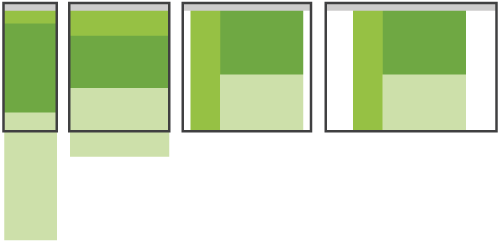
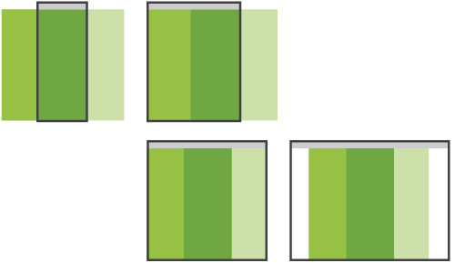

Pragmatic Responsive
Web Design
From John Tsevdos / @tsevdos
hi I'm John and I'm social...
agenda
- why rwd
- how rwd
- rwd tips and techniques
why responsive?
- and not native
- and not mobile site
because with a responsive web site we provide support
- for all devices, including tablets, phones and tvs
- for all screen sizes
- for all (modern?) browsers
- and because we love the "one site to rule them all" attitude
responsive web design principles
- flexible layout (grid)
- media queries
- flexible media (images, videos, etc.)
that's all bye, bye...
...but I promise pragmatic responsive web design!
being pragmatic
- think different
- support as many devices/browsers your budget allows
- solve problems with simple solutions
first things first
- think out of the box, think responsivly
- forget pixel-perfection
- layout (wireframe it)
- forget colors, images, logos etc.
- prototype it (browser-ready protype)
mobile first
- mobile first content?
- mobile first styles
question : why mobile first?
set your major and minor break points
- the first break point is the no "break point"
- primary (mobile first) styles
- set break points where your content needs adjusting
- phones (320/480)
- tablets (768/1024)
- (small) desktop (1024)
- (large) desktop (1200 and over)
set your major and minor break points
@media only screen and (min-width:480px) {...}
@media only screen and (min-width:768px) {...}
@media only screen and (min-width:1024px) {...}
@media only screen and (min-width:1200px) {...}
question : does it make sense to create a break point (and make adjustments) for every known device?
CSS
the % way
- do the right math (target ÷ context = result)
-
#container { width:100%; max-width:1200px; } #main { float:left; width:75%; } /* 900 / 1200 */ #sidebar { float:right; width:25%; } /* 300 / 1200*/ - flexible margin / paddings
-
#main { float:left; width:71.666666%; /* 860 / 1200 */ padding:1.666666%; /* 20 / 1200 */ } - tip: use % for fonts as well
CSS
the em way
- same as above, but with ems
- how much is 1em?
-
1em = 100% from 16px = 16px 1.5em = 150% from 16px = 24px 0.5em = 50% from 16px = 8px - tip: use ems for fonts as well
CSS
flexible media
img { max-width:100%; }img, object, embed, video { max-width:100%; }img { max-width:100%; height:auto !important; /* just in case, to force correct aspet ratio */ }img { -ms-interpolation-mode: bicubic; } /* IE scaling fix */- fluid images from unstoppable robot ninja post
- fitvids.js
CSS
the rest
- normalize
- set a good base (typography, colors, helpers, etc.)
- use CSS preprocessors (SASS, LESS, etc.)
markup
- use HTML5
- take control
<meta name="viewport" content="width=device-width, initial-scale=1" /> - be nice to IE6-8
<meta http-equiv="X-UA-Compatible" content="IE=edge,chrome=1">- use html5shiv or modernizr
- respond.js
markup
- Easy mobile-friendly enchantments
- Tel:
<a href="tel:+306948123456">+306948123456</a> - SMS:
<a href="sms:+306948123456">+306948123456</a> - iPhone/iPad icon:
<link rel="apple-touch-icon" sizes="57x57" href="touch-icon-iphone-114.png" />
- Tel:
responsive web design is great, but you'll need more
- unobtrusive javascript
- feature detection
- enrich touch devices (tablets/mobiles)
- navigation
- touch events (on image galleries, etc.)
- geolocation
hand-code or frameworks
that's a tough one, it depends
- budget
- time
- project scale
responsive web design frameworks
responsive web design patterns
- Multi-Device Layout Patterns (all images are from the post)
mostly fluid

column drop

layout shifter

tiny tweaks

off canvas

responsive web design patterns
toolbox
- text editor / IDE
- Chrome / Firefox
- iPad
- iPhone
- Adobe Edge Inspect
testing
- don't rely on emulators and other desktop tools
- try to test to as many devices / browsers / OS you can
- you're not magician, it may not work on your mum's mobile...
thank you
questions ?